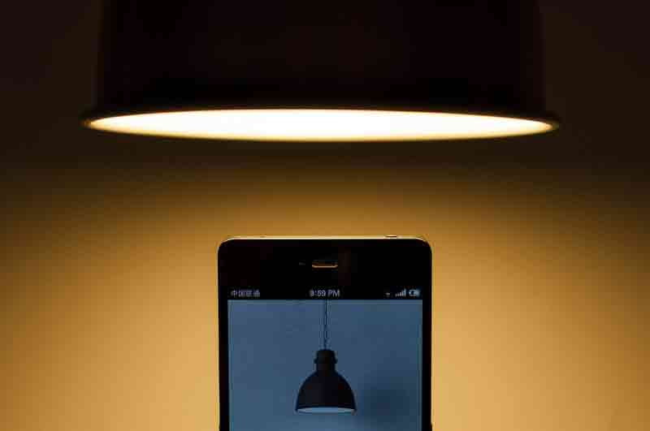

<!DOCTYPE html>
<html  >
<head>
  <!-- Site made with Mobirise Website Builder v4.12.4, https://mobirise.com -->
  <meta charset="UTF-8">
  <meta http-equiv="X-UA-Compatible" content="IE=edge">
  <meta name="generator" content="Mobirise v4.12.4, mobirise.com">
  <meta name="viewport" content="width=device-width, initial-scale=1, minimum-scale=1">
  <link rel="shortcut icon" href="assets/images/logo2-128x124.png" type="image/x-icon">
  <meta name="description" content="Web Site Builder Description">
  
  
  <title>螳螂拳</title>
  <link rel="stylesheet" href="assets/web/assets/mobirise-icons/mobirise-icons.css">
  <link rel="stylesheet" href="assets/bootstrap/css/bootstrap.min.css">
  <link rel="stylesheet" href="assets/bootstrap/css/bootstrap-grid.min.css">
  <link rel="stylesheet" href="assets/bootstrap/css/bootstrap-reboot.min.css">
  <link rel="stylesheet" href="assets/dropdown/css/style.css">
  <link rel="stylesheet" href="assets/tether/tether.min.css">
  <link rel="stylesheet" href="assets/animatecss/animate.min.css">
  <link rel="stylesheet" href="assets/theme/css/style.css">
  <link rel="preload" as="style" href="assets/mobirise/css/mbr-additional.css"><link rel="stylesheet" href="assets/mobirise/css/mbr-additional.css" type="text/css">
  
  
  
</head>
<body>

<!-- Analytics -->
<!-- Global Site Tag (gtag.js) - Google Analytics -->
<script async src="https://www.googletagmanager.com/gtag/js?id=UA-107525821-1"></script>
<script>
  window.dataLayer = window.dataLayer || [];
  function gtag(){dataLayer.push(arguments)};
  gtag('js', new Date());

  gtag('config', 'UA-107525821-1');
</script>

<!-- /Analytics -->


  <section class="menu cid-qx0S5gxj2E" once="menu" id="menu1-13">

    

    <nav class="navbar navbar-expand beta-menu navbar-dropdown align-items-center navbar-fixed-top navbar-toggleable-sm bg-color transparent">
        <button class="navbar-toggler navbar-toggler-right" type="button" data-toggle="collapse" data-target="#navbarSupportedContent" aria-controls="navbarSupportedContent" aria-expanded="false" aria-label="Toggle navigation">
            <div class="hamburger">
                <span></span>
                <span></span>
                <span></span>
                <span></span>
            </div>
        </button>
        <div class="menu-logo">
            <div class="navbar-brand">
                <span class="navbar-logo">
                    <a href="http://kmc.club.kmu.edu.tw">
                         
                    </a>
                </span>
                <span class="navbar-caption-wrap"><a class="navbar-caption text-secondary display-5" href="index.html">高醫傲塵國術社</a></span>
            </div>
        </div>
        <div class="collapse navbar-collapse" id="navbarSupportedContent">
            <ul class="navbar-nav nav-dropdown" data-app-modern-menu="true"><li class="nav-item dropdown">
                    <a class="nav-link link text-white dropdown-toggle display-4" href="index.html#slider1-r" data-toggle="dropdown-submenu" aria-expanded="false">
                        <span class="mbri-home mbr-iconfont mbr-iconfont-btn"></span>&nbsp;更多介紹 &nbsp; &nbsp; &nbsp;</a><div class="dropdown-menu"><a class="text-white dropdown-item display-4" href="assets/files/%E9%AB%98%E9%86%AB%E7%A4%BE%E5%9C%98%E5%8F%B2%E8%A9%B1(%E4%B8%8B)-%E5%9C%8B%E8%A1%93%E7%A4%BE.pdf" aria-expanded="false" target="_blank">社團史話</a><a class="text-white dropdown-item display-4" href="tutors.html#testimonials1-1e" aria-expanded="false">教練群介紹</a><div class="dropdown"><a class="text-white dropdown-item dropdown-toggle display-4" href="index.html#slider1-r" aria-expanded="false" data-toggle="dropdown-submenu">拳譜介紹</a><div class="dropdown-menu dropdown-submenu"><a class="text-white dropdown-item display-4" href="baji.html#header6-19" aria-expanded="false">八極拳</a><a class="text-white dropdown-item display-4" href="tanglang.html#header1-1b" aria-expanded="false">螳螂拳</a></div></div><a class="text-white dropdown-item display-4" href="index.html#video2-x" aria-expanded="false">武展表演片段</a></div>
                </li>
                <li class="nav-item">
                    <a class="nav-link link text-white display-4" href="index.html#footer2-1c" target="_blank">
                        <span class="mbri-search mbr-iconfont mbr-iconfont-btn"></span>&nbsp;練習時間 &nbsp; &nbsp; &nbsp;&nbsp;</a>
                </li></ul>
            <div class="navbar-buttons mbr-section-btn"><a class="btn btn-sm btn-primary display-4" href="http://line.me/ti/g/HsHXAC7_ms" target="_blank"><span class="mbri-mobile mbr-iconfont mbr-iconfont-btn"></span>
                    
                    馬上加入</a></div>
        </div>
    </nav>
</section>

<section class="engine"><a href="https://mobirise.info/z">best website templates</a></section><section class="header1 cid-qx5DhWbon7 mbr-fullscreen mbr-parallax-background" id="header1-1b">

    

    

    <div class="container">
        <div class="row justify-content-md-center">
            <div class="mbr-white col-md-10">
                <h1 class="mbr-section-title align-center mbr-bold pb-3 mbr-fonts-style display-1">
                    螳螂拳
                </h1>
                
                
                
            </div>
        </div>
    </div>

</section>

<section class="mbr-section article content1 cid-qx5zD8YY11" id="content1-16">
    
     

    <div class="container">
        <div class="media-container-row">
            <div class="mbr-text col-12 col-md-8 mbr-fonts-style display-7"><p><strong>步之種類甚多，大概有弓步，馬步，丁字步，八字步，長山步，金雞步，寒雞步，跟步，流水步，</strong></p><p><strong>前提後脫步，竄跳步，玉環步，滑步等等，種類繁多，筆難盡述。但以弓步及馬步為基本步法，</strong></p><p><strong>弓馬步站好 ，則腿力增長，舉鼎劈山之力生焉。腰力支撐全身，臂力以發揮劈擊 之能，各種步法</strong></p><p><strong>隨身形而轉變，合於弓則弓，合於馬則馬，跟步脫步</strong><strong>宜於前進，竄跳用於追逐，滑步用於進退閃轉，</strong></p><p><strong>餘係中守，步之種類雖多，藝成之後則合而為一俗謂 "非丁非八，非弓非馬，怎麼順勁怎麼發。</strong><strong>" </strong></p><p><strong>必如此方可達到從心所欲之境界，始謂大乘。</strong></p></div>
        </div>
    </div>
</section>

<section class="carousel slide cid-qx5A2fCWMn" data-interval="false" id="slider1-17">

    

    <div class="full-screen"><div class="mbr-slider slide carousel" data-keyboard="false" data-ride="false" data-interval="4000" data-pause="true"><ol class="carousel-indicators"><li data-app-prevent-settings="" data-target="#slider1-17" data-slide-to="0"></li><li data-app-prevent-settings="" data-target="#slider1-17" data-slide-to="1"></li><li data-app-prevent-settings="" data-target="#slider1-17" class=" active" data-slide-to="2"></li></ol><div class="carousel-inner" role="listbox"><div class="carousel-item slider-fullscreen-image" data-bg-video-slide="false" style="background-image: url(assets/images/1.jpg);"><div class="container container-slide"><div class="image_wrapper"><div class="mbr-overlay"></div><div class="carousel-caption justify-content-center"><div class="col-10 align-center"><h2 class="mbr-fonts-style display-1"></h2><p class="lead mbr-text mbr-fonts-style display-5">起式
<br>柱捶摔落式 &nbsp; 進步連三捶 &nbsp;雙圈窩肚椎
<br>斧刃後蹬腿 &nbsp; 崩拳閉門腿 &nbsp;勾摟採撞肘</p></div></div></div></div></div><div class="carousel-item slider-fullscreen-image" data-bg-video-slide="false" style="background-image: url(assets/images/2.jpg);"><div class="container container-slide"><div class="image_wrapper"><div class="mbr-overlay"></div><div class="carousel-caption justify-content-center"><div class="col-10 align-left"><h2 class="mbr-fonts-style display-1"></h2><p class="lead mbr-text mbr-fonts-style display-5">1.勾摟封手式  2.採手窩肚捶  3.轉身撩陰肘  4.雙龍入海式  5.偷手右劈砸
<br>&nbsp;6.封手右崩捶  7.轉身左劈捶  8.上步右劈砸  9.墊步右吹燈 10.採手斜劈捶
<br>11.轉身斜跨虎 12.墊步掃堂腿 13.偷步右盤肘 14.登山右崩捶 15.轉身左劈捶
<br>16.雙起雙落式 17.雙風扇耳式 18.雙摟串膛腳 19.落步撲面掌 20.馬式右盤肘
<br>21.右捆手崩捶 22.墊步右穿嗓 23.七星破刀手 24.偷手右蹬撲 25.順步右頂肘
<br>26.採手右圈捶 27.撤步右搜眼 28.轉身雙勒手 29.前後掃堂腿 30.蹬山左崩捶
<br>31.泰山壓頂式 32.崩拳閉門腳 33.拔步避擊手 34.螳螂捕蟬式</p></div></div></div></div></div><div class="carousel-item slider-fullscreen-image active" data-bg-video-slide="false" style="background-image: url(assets/images/3.jpg);"><div class="container container-slide"><div class="image_wrapper"><div class="mbr-overlay"></div><div class="carousel-caption justify-content-center"><div class="col-10 align-right"><h2 class="mbr-fonts-style display-1"></h2><p class="lead mbr-text mbr-fonts-style display-5">１、開門見山式 　２、大鵬展翅式 　３、馬式左密肘 　４、登山右衝捶
<br>５、右左連環劈 　６、馬式十字劈 　７、仆腿下身式 　８、拗步右直捶
<br>９、十字彈腿式 １０、馬式蓋頂劈 １１、右旋風腳法 １２、馬式右衝捶
<br>１３、捆封連環拳 １４、回身連環劈 １５、虛式破骨手 １６、左右虎抱頭
<br>１７、殿步拘摟捶 １８、順風掃葉式 １９、採手鎖口捶 ２０、閉截手崩捶
<br>２１、偷手漏進捶 ２２、崩捶左頂膝 ２３、白猿偷桃式 ２４、摟手拗步捶
<br>２５、十字蹬腳式 ２６、封手二起腳 ２７、仆腿下身式 ２８、登山雙叫掌
<br>２９、右後掃膛腳 ３０、雙綑左坐肘 ３１、回身閉接手 ３２、轆轤偷心捶
<br>３３、崩捶偷心捶 ３４、雙封腰斬式 ３５、纏絲連環腿 ３６、背後虎尾腳
<br>３７、寒雞式蓋捶 ３８、退步跨虎式 ３９、退步停身式 ４０、收　 &nbsp; &nbsp;　式&nbsp;</p></div></div></div></div></div></div><a data-app-prevent-settings="" class="carousel-control carousel-control-prev" role="button" data-slide="prev" href="#slider1-17"><span aria-hidden="true" class="mbri-left mbr-iconfont"></span><span class="sr-only">Previous</span></a><a data-app-prevent-settings="" class="carousel-control carousel-control-next" role="button" data-slide="next" href="#slider1-17"><span aria-hidden="true" class="mbri-right mbr-iconfont"></span><span class="sr-only">Next</span></a></div></div>

</section>


  <script src="assets/web/assets/jquery/jquery.min.js"></script>
  <script src="assets/popper/popper.min.js"></script>
  <script src="assets/bootstrap/js/bootstrap.min.js"></script>
  <script src="assets/viewportchecker/jquery.viewportchecker.js"></script>
  <script src="assets/smoothscroll/smooth-scroll.js"></script>
  <script src="assets/dropdown/js/nav-dropdown.js"></script>
  <script src="assets/dropdown/js/navbar-dropdown.js"></script>
  <script src="assets/touchswipe/jquery.touch-swipe.min.js"></script>
  <script src="assets/tether/tether.min.js"></script>
  <script src="assets/bootstrapcarouselswipe/bootstrap-carousel-swipe.js"></script>
  <script src="assets/parallax/jarallax.min.js"></script>
  <script src="assets/ytplayer/jquery.mb.ytplayer.min.js"></script>
  <script src="assets/vimeoplayer/jquery.mb.vimeo_player.js"></script>
  <script src="assets/theme/js/script.js"></script>
  <script src="assets/slidervideo/script.js"></script>
  
  
 <div id="scrollToTop" class="scrollToTop mbr-arrow-up"><a style="text-align: center;"><i class="mbr-arrow-up-icon mbr-arrow-up-icon-cm cm-icon cm-icon-smallarrow-up"></i></a></div>
    <input name="animation" type="hidden">
  </body>
</html>